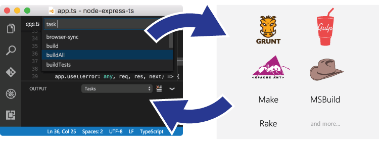
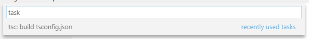
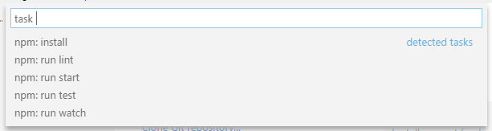
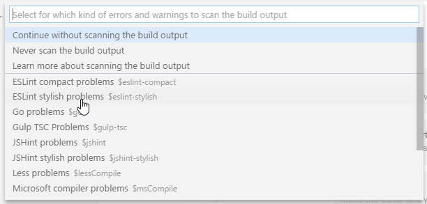
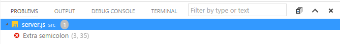
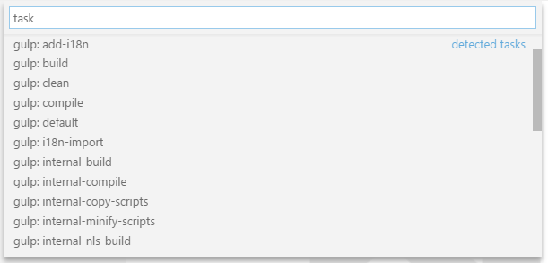
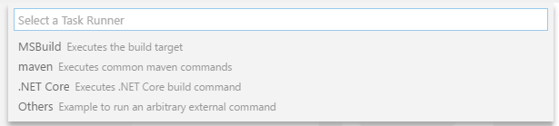
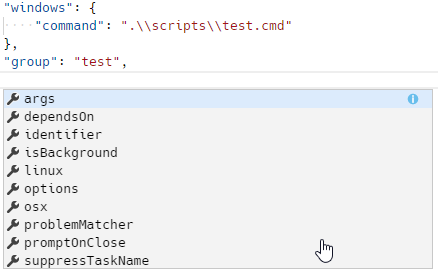
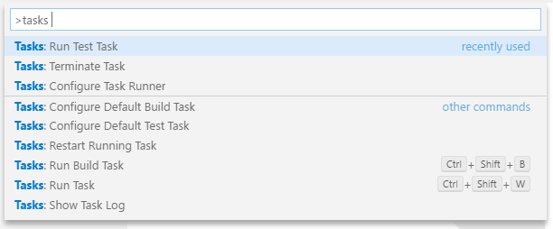
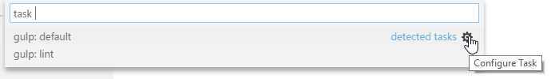

タスクを利用して外部ツールと統合する
編集メモ: 追加資料Tasks Appendix
Visual Studio Code 1.13以前のバージョンを使用している場合は、以前のバージョンのタスクドキュメントを参照してください。
ビルド、パッケージング、テストやソフトウェアのシステム構築などのタスクを自動化するツールが多数存在します。いわゆる Make, Ant, Gulp, Jake, Rake, MSBuildのことです。

これらのツールは主にコマンドラインから実行され、ソフトウェア開発(編集, コンパイル, テスト, デバッグ)以外のジョブを自動化します。開発ライフサイクルにおけるこれらの重要性を考えると、VS Codeからツールを実行してその結果を分析できることはとても便利だといえるでしょう。
Note: タスクはワークスペースフォルダー上で作業している場合にのみ使用できます。つまり、1つのファイルを編集しているときは使用できません。
TypeScript Hello World
JavaScriptにコンパイルする単純な “Hello World” TypeScriptプログラムから始めましょう。
空のフォルダー”mytask”を作成したのち、そこにtsconfig.jsonファイルを作成して、VS Codeをこのフォルダーから開始します。
|
次の内容の HelloWorld.tsファイルを作成します
|
そして⇧⌘B (Windows, Linux Ctrl+Shift+B)を押すかタスクメニューからビルドタスクの実行…を実行すると、次のピッカーを表示できます:

エントリーを選択するとTypeScriptコンパイラーが実行され、TypeScriptファイルがJavaScriptファイルに変換されます。このコンパイラーが終了したとき、HelloWorld.jsファイルがあるはずです。
このTypeScriptのビルドタスクを既定のビルドタスクとして定義して、ビルドタスクの実行 (⇧⌘B (Windows, Linux Ctrl+Shift+B))を実行するだけで直接これを実行するように構成できます。これを行うにはタスクメニューから既定のビルドタスクの構成を選択します。これにより利用可能なビルドタスクのピッカーが表示されます。ここでTypeScriptを選択するとVS Codeは次のtasks.jsonファイルを生成します:
|
0.1.0バージョンのtasks.jsonファイルとは異なり、これは新しいタスクを定義しません。これはVS CodeのTypeScript拡張機能によってTypeScriptのコンパイラータスクに提供され、既定のビルドタスクになります。(?)これにより⇧⌘B (Windows, Linux Ctrl+Shift+B)を押すことでTypeScriptコンパイラーが実行できるようになるのです。
タスクの自動検出
現在VS Codeでは、Gulp、Grunt、Jake、npmのタスクを自動検出します。私たちはMavenとC# dotnetコマンドでもサポートするように、拡張機能の作成者と協力して対応中です。ランタイムにNode.jsを使用するJavaScriptアプリケーションを開発する場合、たいていは依存関係とスクリプトの実行を記述するpackage.jsonが用意されています。ここで、既にeslint-starterの例をクローンしている場合、メニューからタスクの実行を実行すれば次のリストを表示できます:

今回は必要なNode.jsモジュールをインストールするためにnpm: installを選択します。問題マッチャーを選択するように求められたら、Continue without scanning the build output(タスクの出力をスキャンしません)を選択してください。(編集メモ: この誤訳は次のバージョンのころに治ると思います17/07/29)これにより必要なNode.jsモジュールがすべてインストールされます。
次にserver.jsファイルを開いて、statementの最後にセミゴロンを追加します(ES Lint starterはセミコロンなしのstatementを設定することに注意してください)。そうしたらタスクの実行をもう一度実行します。今回はnpm: run lintタスクを選択します。もし問題マッチャーを選択す量に求められたら、ESLint stylishを選択してください。

実行すると問題ビューにタスクのエラーが1つ発生します:

また、VS Codeは次の内容のtasks.jsonファイルを作成しています:
|
これは、VS Codeが問題の形式にESLintのstylishを使用して、npm lintの出力をスキャンするように指示するコードになります。
Gulp、Grunt、Jakeの場合でも同じように自動検出が機能します。下記はvscode-node-debug拡張機能に検出されたタスクの例です。

Tip: Quick Open(⌘P (Windows, Linux Ctrl+P))で”`task``kbstyle(Space)
“と入力した場合でもタスクを実行できます。今回の場合は’task lint’です。
カスタムタスク
ワークスペース内のすべてのタスクやスクリプトが自動検出できるわけではありません。場合によっては独自のカスタムタスクを定義する必要があります。環境によって異なる設定をする必要があるテストを実行するスクリプトがあるとします。このスクリプトは、LinuxとmacOSでtest.sh、Windowsでtest.cmdという名前でワークスペース内のスクリプトフォルダーに格納されます。ここでタスクメニューからタスクの構成を実行すると、次のピッカーが開きます:

Note: タスクランナーのテンプレートが表示されない場合は、フォルダー内に
tasks.jsonファイルが既にある可能性があります。(既にある場合はエディターでこれが開かれます。)今回はファイルを閉じて削除するか名前を変更してください。
私たちはより多くの自動検出の対応に取り組んでおり、このリストは今後さらに小さくなる予定です。ここで私たちは独自のカスタムタスクを作成したいので、リストからOthersを選択します。これによりタスクのひな形を持つtask.jsonが開きます。内容を次のように置き換えてください:
|
このタスクのプロパティには次のセマンティックがあります:
- taskName: ユーザインターフェイスで使用されるタスクの名前。
- type: タスクの種類。カスタムタスクの場合
shellかprocessのどちらかです。shellを指定した場合、コマンドはシェルコマンド(例: bash cmd PowerShell)として解釈されます。processを指定した場合、コマンドは実行されるプロセスとして解釈されます。shellを選択した場合、適切な引数を引用するために、コマンドへの引数はcommandプロパティに埋め込む必要があります。たとえば、テストスクリプトが--debug引数を受け入れる場合、コマンドのプロパティは./scripts/test.sh --debugになります。 - command: 実行する実際のコマンド。
- windows: Windows固有のプロパティ。Windows OS上で実行されるとき、既定のプロパティの代わりに使用されます。
- group: タスクが属するグループを定義します。この例では
testグループに属しています。テストグループに属するコマンドはコマンドパレットからテストタスクの実行で実行できます。 - presentation: タスク出力をユーザインターフェイスで処理する方法を制御します。今回の例では、常に出力を統合ターミナルで表示する
alwaysで、実行するタスクすべてで新しいターミナルが作られます。
ワークスペースを構成するタスクプロパティはこの他にもあります。⌃Space (Windows, Linux Ctrl+Space)を使用してIntelliSenseを使用すれば、有効なプロパティの概要を知ることが可能です。

メニューバーからに加えて、タスクのコマンドはコマンドパレット(⇧⌘P (Windows, Linux Ctrl+Shift+P))を使用してアクセスできます。ここでは’task’でフィルターをかけることでタスクのコマンドに関係するものを確認できます。

出力の動作
タスクを実行しているときに、統合ターミナルのパネル動作を制御したいと思うことでしょう。たとえば、タスクに問題があるときは、エディターを最大化して、タスク出力ウィンドウのみを表示したいと思うかもしれません。ターミナルの動作は、タスクのpresentationプロパティを使用して制御することができます。次のプロパティが提供されています:
- reveal: 統合ターミナルのパネルを全面に表示するかどうかを制御します。有効値は次の通りです:
- always - パネルを常に全面で表示します。(既定)
- never - ユーザーが 表示 > 統合ターミナル()を実行してターミナルパネルを開くまで確認できません。
- silent - エラーと警告がスキャンされなかったときのみ、ターミナルパネルを全面に表示します。
- focus: ターミナルにフォーカスするかどうかを制御します。既定は
falseです。 - echo: 実行されたコマンドがターミナルにエコーされるかどうかを制御します。既定は
trueです。 - panel: タスクをターミナル間で共有するかどうかを制御します。可能値は次の通りです:
- shared: ターミナルは共有され、別タスクの実行出力も同じターミナルに追加されます。
- dedicated: ターミナルは特定のタスクで使用されます。もしそのタスクがもう一度実行されれば、ターミナルが再利用されます。よって異なるタスクの出力は異なるターミナルに表示します。
- new: タスクが実行されるたびに、新しい空のターミナルを使用します。
自動検出のタスクでもターミナルパネルの動作を変更できます。たとえば、上記のESLintの例からnpm: run lint の出力動作を変更するには、 presentationプロパティを追加します:
|
また検出されたタスクと、構成済みのカスタムタスクを一緒にすることもできます。npm: run lintタスクを構成し、カスタムRun Testタスクを追加するtasks.json次のようになります:
|
自動検出タスクのカスタマイズ
上記の通り、tasks.jsonファイルで自動検出タスクをカスタマイズすることができます。通常はpresentationプロパティを編集するか、問題マッチャーでタスクの出力をスキャンしてエラーと警告を探します。この他にもタスクの実行のリストから直接カスタマイズすることができます。右の歯車アイコンを押して対応するタスクをtasks.jsonファイルに挿入する方法です。ESLintを使用しているJavaScriptをLintする次のGulpファイルがあるとします(https://github.com/adametry/gulp-eslint から引用):
|
ここでタスクメニューからタスクの実行を実行すると、次のピッカーが表示されるはずです:

この歯車アイコンを押してください。これにより次の内容でtasks.jsonが作成されます:
|
通常であれば問題マッチャー(この場合は$eslint-stylish)を追加するかpresentation設定を編集することになります。
問題マッチャーによるタスク出力の処理
VS Codeは問題マッチャーを利用して、タスクからの出力を処理することができます。次に標準の例を示します:
- TypeScript:
$tscは出力のファイル名が開かれたフォルダーと相対的であることを前提としています。 - TypeScript Watch:
$tsc-watchはwatchモードで実行されたとき、tscコンパイラーから報告される問題と一致します。 - JSHint:
$jshintはファイル名が絶対パスとして報告されることを前提としています。 - JSHint Stylish:
$jshint-stylishはファイル名が絶対パスとして報告されることを前提としています。 - ESLint Compact:
$eslint-compactは出力のファイル名が開かれたフォルダーと相対的であることを前提としています。 - ESLint Stylish:
$eslint-stylishは出力のファイル名が開かれたフォルダーと相対的であることを前提としています。 - Go:
$goはgoコンパイラーから報告される問題と一致します。ファイル名は開いているファイルと相対であることを前提とします。 - CSharp and VB Compiler:
$mscompileはファイル名が絶対パスとして報告されることを前提としています。 - Less:
$lessCompileはファイル名が絶対パスとして報告されることを前提としています。
問題マッチャーは既知の警告やエラー文字列を確認するために、タスクの出力テキストを解析してエディターと問題パネルにインラインで報告します。
また、独自の問題マッチャーも作成可能です。この後のセクションで解説します。
タスクにキーボードショートカットをバインド
タスクを頻繁に実行する必要があるとき、タスクのキーボードショートカットを定義することができます。
たとえばctrl+hをRun testsタスクに上書きするバインドなら、keybindings.jsonに次を追加します:
|
変数置換 (変数)
タスクを構成するとき、事前に定義された共通変数を利用すると便利なことがよくあります。VS Codeはtasks.jsonファイル内で文字列の変数置換をサポートしており、次の定義された変数を持っています:
- ${workspaceRoot} VS Codeで開いたフォルダーのパス
- ${workspaceRootFolderName} VS Codeで開いたスラッシュ(/)を含まないフォルダーの名前
- ${file} 現在開いているファイル
- ${relativeFile}
workspaceRootと相対的な現在開いているファイル - ${fileBasename} 現在開いているファイルのベース名
- ${fileBasenameNoExtension} 現在開いているファイルから拡張子を含まないファイルの名前
- ${fileDirname} 現在開いているファイルのディレクトリ名
- ${fileExtname} 現在開いているファイルの拡張子
- ${cwd} タスクランナー起動時の現在の作業ディレクトリ
${lineNumber} アクティブなファイルの現在選択されている行番号
${env.Name}を利用して、環境変数を参照することもできます(例:${env.PATH})。環境変数のNAMEは必ず大文字と小文字を区別してください。例:
env.Path(windows)
次の例は、現在開いているファイルをTypeScriptのコンパイラーに渡すカスタムタスク構成の例です。
|
OS特有のプロパティ
タスクシステムは、OS固有の定義をサポートしています。これを行うには、tasks.jsonファイルにOSのリテラル(名前)を書き込み、その中に対応するプロパティを指定します。
次の例は、Node.jsの実行可能ファイルの場所をコマンドとして使用する例であり、WindowsとLinuxで異なった扱い受けます:
|
有効なプロパティは、Windowsではwindows、Linuxではlinux、macOSではosxです。OS特有のスコープで定義したプロパティは、グローバルスコープで定義するプロパティより優先されます。
グローバルスコープでタスクのプロパティを定義することもできます。これがあるとき、同じプロパティーで異なる値を定義しない限りそのタスクで使用されます。次の例では、新しいパネルで必ず実行するように定義するpresentationプロパティーを使用しています:
|
実践的なタスクの例
タスクの機能を最大限活用するために、VS Codeのタスクを使用してlintやコンパイラーなどの外部ツールを統合する方法を次に示します:
TypeScriptをJavaScriptに変換
TypeScriptトピックでは、TypeScriptをJavaScriptに変換し、VS Code内で関連するエラーを監視するタスクを作成する例を解説します。
MarkdownをHTMLにコンパイル
Markdownトピックでは、MarkdownをHTMLにコンパイルするための2つの例を解説しています。
- ビルドタスクを利用して手動のコンパイルを行う
- [ファイルウォッチャーによるコンパイルステップの自動化]（/ docs / languages / markdown.md＃automating-markdown-compilation）
LessとSassをCSSへ変換
CSSトピックでは、タスクを使用してCSSファイルを生成する方法の例を開設しています。
問題マッチャーの定義
VS Codeは一般的な問題のマッチャーのいくつかを同封しています。多くのコンパイラーとlintのツールがありこれらツールはそれぞれ独自の形式のエラーと警告を生成しますが、この性質を利用して独自の問題マッチャーを作成することが可能です。
ここに、開発者がprintfをprinftと間違えたhelloWorld.cプログラムがあるとします。これをgccでコンパイルすれば次の警告を表示します:
|
出力のメッセージをキャプチャして、VS Codeで該当する問題を表示できる問題マッチャーを作りたいと思います。なお問題マッチャーは正規表現に大きく依存しています。次のセクションは正規表現に精通していることを前提としています。
Tip: 私たちはRegEx101 playgroundが正規表現を確認する最適な方法であることを確認しています。
上記の警告(エラー)をキャプチャするマッチャーは次のようになります:
|
ファイル、行、メッセージのプロパティが必須であることに注意してください。
次のtasks.jsonファイルは先ほどの例からコメントを削除した、実際のタスクです:
|
VS Code内でこれを実行し、⇧⌘M (Windows, Linux Ctrl+Shift+M)をおして次のような問題のリストを表示します:

パターン内で使用可能なプロパティはもう複数あります:
- location if the problem location is line or line,column or startLine,startColumn,endLine,endColumn then our generic location match group can be used.
- endLine the match group index for the problem’s end line. Can be omitted if no end line value is provided by the compiler.
- endColumn the match group index for the problem’s end column. Can be omitted if no end column value is provided by the compiler.
- code the match group index for the problem’s code. Can be omitted if no code value is provided by the compiler.
Note: これらパターンにはファイル、メッセージ、行、場所のマッチグループを指定する必要があります。
複数行の問題マッチャーの定義
いくつかのツールではstylishを利用している場合に、ソースファイル内の問題を複数行に広げて表現します。例としてESLintをとると、このstylishモードでは次のような出力を得ます:
|
私たちの問題マッチャーは行を基準とするので、メッセージ(1:0 error Missing “use strict” statement)で使用したものとは異なる正規表現を使用して、test.js(ファイル名)をキャプチャする必要があります。
これを行うには、patternプロパティで複数の問題パターンを使用します。この方法によって一致させたい行ごとにパターンを定義します。
次の問題パターンは、stylishモードにおいてESLintからの出力に対応できます。ですが、これにはまだ問題がありますのでこの次で解決しましょう。次のコードで、1番目の正規表現はファイル名を取得し、2番目の正規表現は行、列、重大度、メッセージおよびエラーコードを取得します。
|
ただし、リソースに複数の問題があるならこれは機能しません。たとえば、ESLintからの次の出力を想像してみてください:
|
パターンの最初の正規表現は “test.js”と一致し、次に “1:0 error …”.と一致します。次の行の”1:9 error …”は処理されますが、先ほどの正規表現では一致しないため問題はキャプチャされません。
これを機能させるために、パターン最後の正規表現でloopプロパティを指定することができます。trueに設定すると正規表現が一致するかぎり、出力内の各行にし対してマッチャーの最後のパターンを適用し続けるようにタスクシステムに指示します。
すべてのパターンでキャプチャされた情報は、最後のパターンでキャプチャされた情報と組み合わせて、VS Code内の問題に変換されます。
これはESLintにおけるstylish問題を完全にキャプチャするための問題マッチャーです:
|
バックグラウンド / 監視タスク
いくつかのツールはバックグラウンドでの動作をサポートしています。これはファイルシステムでファイルの変更を監視し、ディスク上でファイルが変更されたときにタスクをトリガーします。Gulpではこのような機能をgulp-watchにより提供しています。TypeScriptコンパイラtscでは、これを--watch commandのラインオプションによってサポートしています。
バックグランドのタスクはVS Code内でのフィードバックを提供するために、また問題マッチャーは出力における追加の情報を検出するために、いずれも状態を示す追加の情報を使用する必要があります。tscを例にとってみましょう。コンパイラーがwatchモードで起動されると、次の追加情報がコンソールに出力されます:
|
ディスク上の問題があるファイルが変更されると、次の出力を表示します:
|
出力では次のようなパターンを監視しています:
File change detected. Starting incremental compilation...がコンソールに表示されているときコンパイラーを実行する。Compilation complete. Watching for file changes.がコンソールに表示されているときコンパイラーを停止します。- この間に問題は報告されます。
- またコンパイラーは最初の開始(
File change detected. Starting incremental compilation...がコンソールに表示されていない場合)でも一度実行します。
この情報をキャプチャするために、問題マッチャーはwatchingプロパティを提供できます。
tscコンパイラーの場合は次のようになります:
|
問題マッチャーのwatchingプロパティに加えて、タスク自体にisBackgroundとマークして、タスクがバッググラウンドで実行し続けるようにする必要があります。
watchモードで機能するtscタスクの完全なtasks.jsonは次のようになります:
|
“0.1.0”から”2.0.0”に変換
2.0.0バージョンには新しい自動検出機能が多くあります。既存のtasks.jsonファイルを削除することで、まだ機能するタスクを確認することができます。既存のtasks.jsonをtasks.json.offに変更してみてください。カスタマイズの属性が多くある場合でもバージョンの属性を"2.0.0"に変更することで切り替えることができます。いくつかのプロパティが非推奨になるため、警告が表示される可能性があります。非推奨の項目を取り除く方法は次の通りです:
- isShellCommand: 代わりに
"type": "shell"プロパティを使用します。 - isBuildCommand: 代わりに
"group": "build"プロパティを使用します。 - isTestCommand: 代わりに`”group”: “test”プロパティを使用します。
- echoCommand: 代わりに
"presentation" : { "echo": "..." }プロパティを使用します。 - showOutput: 代わりに
"presentation" : { "reveal": "..." }プロパティを使用します。 - suppressTaskName: 既定ではタスクのバージョンが
0.1.0のとき、タスク名が引数のリストが追加されます。2.0.0バージョンではタスクごとのコマンドをサポートしているので、コマンドをタスクにインライン化してそれに応じた引数を指定します。次の0.1.0の構成を考えて見ます:
|
対応する2.0.0の構成は次のようになります:
|
- taskSelector: このコマンドをタスクに移動して、コマンド内でタスクセレクターを選択します。
|
対応する2.0.0の構成は次のようになります:
|
新しいタスクランナーで0.1.0バージョンのtasks.jsonファイルを使用したい場合、runnerプロパティをtasks.jsonファイルに追加します:"runner": "terminal"
次のステップ
That was tasks - let’s keep going…
- tasks.json Schema - You can review the full
tasks.jsonschema and descriptions. - Basic Editing - Learn about the powerful VS Code editor.
- Code Navigation - Move quickly through your source code.* Language Support - Learn about our supported programming languages, both shipped with VS Code and through community extensions.
- Debugging - VS Codeでソースコードを直接デバッグ